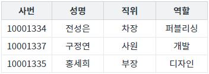
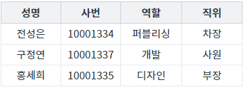

함수 'setColumnOrder'와 함수 'getColumnOrder'의 사용 예제입니다.
각 함수의 기능은 다음과 같습니다.
setColumnOrder : 컬럼의 순서를 Index 또는 ID로 설정합니다.
getColumnOrder : 컬럼의 순서를 Index 또는 ID로 반환합니다.
스크립트로 컬럼(열)의 순서 변경하기
컬럼(열)의 순서 반환받기
STEP 1. 초기 상태를 확인합니다.
GridView의 컬럼(열)이 '사번', '성명', 직위', '역할' 순으로 구성되었습니다.
그림 1.브라우저(Chrome) 실행 예시

STEP 2. 스크립트로 컬럼(열)의 순서 변경하기
버튼 컬럼의 순서를 '성명', '사번', '역할', '직위'로 변경하기를 클릭합니다.STEP 3. 실행된 결과를 확인합니다.
GridView의 컬럼이 '성명', '사번', '역할', '직위' 순으로 구성됩니다.
그림 2.브라우저(Chrome) 실행 예시

STEP 4. 컬럼의 순서를 ID로 반환받기
버튼 컬럼의 순서를 ID로 반환받기를 클릭합니다.STEP 5. 실행된 결과를 확인합니다.
'로그 확인'에 출력된 로그를 확인합니다.(브라우저의 개발자 도구 콘솔에도 로그가 출력되며, 객체 형식으로 확인할 수 있습니다.) 현재 구성된 GridView의 컬럼의 ID가 순서대로 배열에 담겨 반환됩니다.
로그
[09:59:19] # 스크립트 실행 grd_exam1.getColumnOrder(true); 반환 값: ["EMP_NM","EMP_CD","ROLE_CD","POSITION_CD"]
STEP 6. 컬럼의 순서를 Index로 반환받기
버튼 컬럼의 순서를 Index로 반환받기를 클릭합니다.STEP 7. 실행된 결과를 확인합니다.
'로그 확인'에 출력된 로그를 확인합니다.(브라우저의 개발자 도구 콘솔에도 로그가 출력되며, 객체 형식으로 확인할 수 있습니다.) 현재 구성된 GridView의 컬럼의 ID가 순서대로 배열에 담겨 반환됩니다.
로그
[09:59:49] # 스크립트 실행 grd_exam1.getColumnOrder(); 반환 값: [1,0,3,2]
GridView의 함수 'setColumnOrder'를 이용하여 스크립트를 작성합니다. 세부 지정은 아래의 스크립트 예시에 작성되어 있습니다.
스크립트
//예제 파일에서는 스크립트 'scwin.btn_exam1_1_onclick'에 작성되어 있습니다. // GridView 'grd_exam1'의 컬럼 순서를 '성명', '사번', '역할', '직위' 순으로 변경합니다. grd_exam1.setColumnOrder(["EMP_NM", "EMP_CD", "ROLE_CD", "POSITION_CD"]); // GridView의 컬럼 순서를 Index로 지정하는 경우 // grd_exam1.setColumnOrder([1,0,3,2]);
GridView의 함수 'getColumnOrder'를 이용하여 스크립트를 작성합니다. 첫 번째 인자 설정을 통해 ID 또는 Index로 반환받을 수 있습니다. 세부 지정은 아래의 스크립트 예시에 작성되어 있습니다.
스크립트 - ID로 반환받기
//예제 파일에서는 스크립트 'scwin.btn_exam2_1_onclick'에 작성되어 있습니다. // GridView 'grd_exam1'의 컬럼 순서를 ID로 반환받습니다. let result = grd_exam1.getColumnOrder(true); // 반환 값 예시) ["EMP_NM","EMP_CD","ROLE_CD","POSITION_CD"]
스크립트 - Index로 반환받기
//예제 파일에서는 스크립트 'scwin.btn_exam2_2_onclick'에 작성되어 있습니다. // GridView 'grd_exam1'의 컬럼 순서를 Index로 반환받습니다. let result = grd_exam1.getColumnOrder(); // 반환 값 예시) [1,0,3,2]
getColumnOrder( byName )
setColumnOrder( columnOrderArray )
[웹스퀘어5 SP5 개발 가이드] GridView
링크 : https://docs1.inswave.com/sp5_user_guide/86bdcf48029b958b